Realms:
(source http://mortalkombat.wikia.com)
A Realm was the name given to a dimension occupied by a single world.
The Realms were created by the Elder Gods who split the One Being through the use of a Kamidogu. Despite its separation from its form, the One Being would subtly influence inhabitants of the realm to re-merge the Realms back into its true form. Raiden cannot go into some of these realms because his powers weakens.
Chaosrealm (also known as Realm of Chaos):
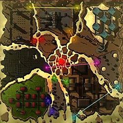
{kind=link}
About:
The Chaosrealm is a world where chaos is practiced by its inhabitants as a religion, so, unlike other realms, it has no form of government whatsoever. Therefore, the Chaosrealmers reflect their world's chaotic nature, and hold absolute freedom and change in the highest esteem, relishing in chaos and living in an absolute anarchy. It is the polar opposite of Orderrealm.
The forces of Orderrealm seek to control Chaosrealm and its vast reserves of water. According to Mortal Kombat: Deception's Konquest mode, the Chaosrealm is also home to a pool of aging located at A-5 of the realm at the end of a small labyrinth, which appears to age anyone that ventures through it, or establishes them to believe 'they have changed' or they 'feel older.' The Chaosrealm is also home of a cemetery that Chaosrealmers hold sacred. Because chaos is practiced as a religion, many temples are found throughout Chaosrealm, where holy men are seen praying in front of the entrance. Chaosrealm possesses geographical features that seem to defy the laws of physics, such as floating rock formations. Chaosrealmers use highly advanced portals to travel between the formations. Apparently, Chaosrealm is said to have been a normal world until at some point in the distant past, the God of Chaos unleashed "the Tempest." This was responsible for the realm's transformation and its fragmentation, and is also thought to have caused collective amnesia among the inhabitants of the realm.
Native realm species
The native species of Chaosrealm are known as Chaosrealmers. Chaosrealmers are humanoid in form and come across as dangerous, primitive, and menacing. Some bear tattoos, strange markings or even more extreme expressions of their ultimate individualism, such as Havik's maimed face or his ability to twist his own bones and muscles in ways that would be lethal to any normal human. This, and the Chaosrealmers' apparent lack of regard for death or life, calls into question whether death truly exists on Chaosrealm, although it is said by random denizens that death is the ultimate chaos as all systems shut down and collapse.
Behavior
Like Netherrealmers, Chaosrealmers tend to speak backwards. Their speech reflects their nature, for when spoken to, some will respond with 'yes, no, yes, no, yes, no, yes.' They hate being asked questions as they are 'forced to give a response' which they view as a form of control. Unlike inhabitants of other realms, Chaosrealmers view being attacked as a positive experience, as, after being attacked, they will give responses such as, 'Thank you. I needed that!' or, 'You really know how to treat a lady!' They also view randomness and aimless walking as a positive action, while even some women view it as a turn-on. A good example of this behavior and attributes is, according to some Chaosrealmers, many enjoy playing a 'game' called 'Everybody Runs Around,' where the objective is to run around aimlessly rather than compete, as it has no rules. They also apparently worship water, and it may be the one thing they hold sacred because of its shapelessness and that it takes no form, characteristics considered by Chaosrealmers to be chaotic.
Notable residents
Native: Havik being the only known native.
Non-native residents, such as the reformed Black Dragon clan have sometimes sought out Chaosrealm as a haven of freedom.
Relationships with other Realms
The Realm of Chaos does not seem to have any real allies, perhaps due to the world's intrinsic nature. Its residents seem keen to spread chaos to other realms, so it could be considered as a threat to other realms. While there is no clear alliance with Outworld, the people of Chaosrealm, Havik, for example, do seem to prefer that Kahn maintain his rule, as his violent conquests bring the chaos they thrive upon to other worlds. The people of Chaosrealm despise Hotaru and Orderrealm. In Deception's Konquest mode, it is revealed that Orderrealm wishes to take Chaosrealm's water. As Havik says " We hold water sacred for its chaotic and fluidic ways. They wish to contain water."
Back to top
Earthrealm:
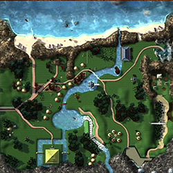
{kind=link}
About:
Earthrealm is one of many realms that were formed after the Elder Gods shattered the One Being. In the Mortal Kombat universe, Earthrealm has been the target of frequent attempts at conquest, because it is thought to be the jewel of the cosmos and an important universal power node. Because of this, the Elder Gods have appointed a deity to protect the realm from harm. For countless centuries this has been Raiden, though other gods such as Fujin also play a role in this. Furthermore, the Shaolin Temple of the Light was formed to train mortals in martial arts and prepare them to defend their world from evil. More recent organizations such as the reformed Lin Kuei or the Special Forces play a similar role. Earthrealm was nearly destroyed millions of years ago in a war between Shinnok and Raiden, and then verged on the brink of collapse during Shao Kahn's short conquest. After his invasion was foiled, Earthrealm has served as an inspiration to other conquered realms of Outworld. Edenia would later be liberated and Nitara's home realm, Vaeternus, would be freed as well.
Native realm species
Technically, all species found on the real Earth are native to it, but two should be highlighted because of their special importance in the Mortal Kombat universe:
Humans: They were the second intelligent race to evolve on Earthrealm, and share most basic characteristics with the people and civilizations from other realms. They tend to live much shorter and are not as adapted to magic as their counterparts. This is compensated by their highly advanced level of technology. And "Earthrealmers" as Princess Kitana of Edenia said in Mortal Kombat (2011), is the name to Earthrealm's inhabitants, who are also called Earthlings.
Saurians (also known as Zaterrans): They were the first intelligent race to populate Earth, but they were nearly wiped out in the war between Shinnok and the other gods. After this war, they chose to emigrate to Zaterra, where they would later be conquered and enslaved by Outworld.
Government
Unlike many other realms, Earthrealm does not possess an absolute ruler. Instead, Earthrealmers organize their lives by residing in separate nations, which are ruled by monarchy, communist state, military dictatorship, theocracy, and democratic republic, depending on the nation. Though many nations are developed, such as America and China, Earthrealm is centered more specifically around villages, perhaps taking place in East Asia. Society is governed by a set of laws, though not to a powerful degree similar to Seido's law enforcement. The laws are enforced by the Special Forces, village guards, and the local police force, depending on the society. For instance, developed countries such as America rely on the local police force, as in, Kurtis Stryker and the S.W.A.T team, whereas the Special Forces investigate outerworld threats. In local villages, guards keep a watchful eye on the roads at night, especially for the sneaky ninja clan, the Lin Kuei.
Religious, spiritual, and moral practices
Religion, the belief system concerning the supernatural, sacred or divine, and moral codes, practices, values, institutions and rituals associated with such belief, is largely practiced by many Earthrealm inhabitants. Among many religious/spiritual beliefs and practices is Buddhism, with known practicers being the Shaolin monks Liu Kang, the Mortal Kombat champion, and Kung Lao, descendant of The Great Kung Lao and close relative of Liu Kang. Many Mortal Kombat training dojos are found within Earthrealm's villages, used for training individuals to survive in potentially dangerous societies.
Society and culture
Society is the system of organizations and institutions arising from interaction between humans. Among many Earthrealm societies, one of the more notable is the White Lotus Society, founded by the Thunder God Raiden to train Earthrealmers in Mortal Kombat to kombat other realms´ forces. Under the watchful eye of Raiden, Earthrealm societies are generally peaceful, in which many Earthrealm inhabitants fear tyranny. Earthrealm also has a distinguished culture, the tastes in art and manners that are favored by a social group within Earthrealm. Earthrealm is known for the creation of rice wine, said to "put Outworld wine to shame." Fishing is also a common activity within the villages, as many inhabitants can be seen carrying fish on spears. Trade is the voluntary exchange of goods and services, and is a form of economics. Thus, Earthrealm provides goods and services, such as meat, including fish, pork, dog, and beef, and service such as locksmiths in the exchange of koins. Each koin's value is determined by its color. Life expectancy for Earthrealmers is significantly different throughout the world, though much shorter than their outerworld counterparts. The average life span for a human is 78-100 in Earthrealm for males and females respectively.
Magical abilities
Earthreamlers, unlike their outer worldly counterparts, only have little, or oftentimes, no magical ability. When an Earthrealmer does utilize magic however, it's often in the form of an element associated with Earth. Examples include Liu Kang's, Kai's, and Kobra's fire manipulation abilities, and Kung Lao's wind manipulation abilities. Sonya Blade and Kira are known to manipulate non-elemental magic associated with Earth, in which they dub the "Kiss of Death," and Johnny Cage has the ability to toss a "force ball," a ball of gathered energy, and use shadow abilities.Kenshi who can use his levitating abilities.
Technological utilization
Many Earthrealmers, to counterbalance for their lack of or limited experience with magic, use technology and engineering to their advantages. Notable technological users are the Special Forces, using highly advanced super portals to transport themselves from realm-to-realm, and high-tech weaponry in battle, in which Jax uses a machine gun and bionic arms to increase his strength. S.W.A.T team captain Kurtis Stryker utilizes tasers, guns, and grenades in battle to further his likelihood of winning in kombat. Other Earthrealmers perform processes called "robotizations," the transformation of humans into cyborgs to enhance strength and kombat abilities. Known practicers were the Lin Kuei in their transformations of the robot trio, Cyrax, Sektor, Smoke and Cyber Sub-Zero. Cyrax and Sektor also use pulse blades in battle, swords created primarily with human technology. The Tekunin warrior robots were hand-created by the Earthrealm native Sektor. The Tekunin clan, fluent with technology, constructed a warship to simplify their tasks for world domination. Kano, leader of the Black Dragon clan, uses an eye laser, whereas Hsu Hao, a Red Dragon member, uses a laser that emits from his cybernetic heart. Mavado, a leader of the Red Dragon klan, uses grappling hooks to maneuver himself quickly around the arena and avoid attacks. Unlike Earthrealmers, many Outworld natives have no trouble performing these tasks by using simple magic without the use of technology.
Notable residents
Native
The Special Forces, also known as the Outer World Investigation Agency: 1st Timeline Cyrax, Jax Briggs, Kenshi, Sonya Blade, formerly Hsu Hao.
The Lin Kuei: Frost, Sub-Zero/Cyber Sub-Zero, Hydro, formerly Noob Saibot, Cyrax, Sektor and Smoke.
The Shirai Ryu: Formerly Scorpion.
The White Lotus Society of Shaolin monks: Kung Lao, Liu Kang, formerly the Great Kung Lao, and Kai.
The Black Dragon: Kano, formerly Tremor, Jarek, Kabal, Kira, and Kobra.
The Red Dragon: Mavado, Hsu Hao, Daegon.
The Tekunin: Sektor.
Others: Johnny Cage, Kurtis Stryker, Mokap, Nightwolf, Shujinko.
Non-native or outcast
Non-native: The gods Raiden and Fujin, among others.
Outcast: Shang Tsung.
Relationships with other Realms
Earthrealm and Edenia are close allies, and have been ever since Earthrealm's warriors freed Edenia from Shao Kahn's rule. The relationship of Liu Kang, the Earthrealm's Mortal Kombat champion, and Edenia's princess Kitana has strengthened that alliance. On the opposing side, both Outworld and the Netherrealm are definite foes of Earthrealm, both having had their respective rulers at some point attempt to control it.
Back to top
Edenia:
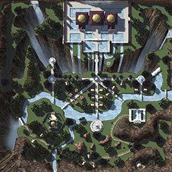
{kind=link}
About:
As its name suggests, the world of Edenia closely resembles the Garden of Eden. A very lush and fertile world with slowly aging inhabitants, Edenia is also a feudal monarchy ruled by Queen Sindel and her daughter Princess Kitana. They are defended by the Edenian Imperial Guard.
The earliest known ruler of Edenia was King Jerrod, the husband of Sindel and the father of Kitana, but was killed by Shao Kahn. Edenia also has a military force called the 'Edenian Resistance' also known as the Edenian Knights in which Jade is the general.
Edenia is known for its delicious Edenian Pie which is a dessert considered to be a rare delicacy, loved by many inhabitants, including those that are not native to Edenia, such as Shao Kahn's guards. Edenia is also home of the large and long forgotten 'Edenian Ruins' which is located in Edenia's old Southlands filled with forgotten craters, as well as home to the fabled Pyramid of Argus and its construction long ago.
Of all realms, Edenia appears closer to Earthrealm in terms of environment, appearance, and population. Because of this, Edenia appears closely related to Earthrealm, since, for instance, like Earthrealm, rain falls regularly, shares similar lifeforms such as grasses and trees, has abundant water, and the inhabitants, such as Kitana, often form relationships with Earthrealmers. Both realms are also interpreted to be a jewel of the cosmos and an important universal power node. As a result, much like Raiden is the protector of Earthrealm, Edenia is protected by the god Argus, said to be the most powerful of the Edenian deities, along with his wife Delia, a human Edenian sorceress with the ability to manipulate fire and predict the future. Edenia and Earthrealm differ in terms of Edenia's more intense preoccupation with magic, whereas Earthrealm is more affluent with technology. Many of Edenia's inhabitants are also civilized, peaceful people, and good artisans with artistic expression,and they also bake pie, a food found in Earthrealm.
War with Outworld
Many years ago, King Jerrod's best warriors lost ten Mortal Kombat tournaments in a row to the warriors of Outworld's ruler, Shao Kahn. By the rulings of the Elder Gods, this granted Kahn the power to invade Edenia. Outworld won the subsequent war and Edenia was annexed. To legitimize himself, Kahn forced queen Sindel into a marriage and adopted her daughter Kitana, among other members of the royal household while personally slaying Jerrod. In the wake of Shao Kahn's defeat at the hands of Liu Kang 10,000 years later, Edenia would be freed from its merger with Outworld by Kitana. With brief intermezzos of war and abduction by evil forces, Sindel has been Edenia's queen ever since. Despite the many thousands of years it was merged with Outworld after being defeated in Mortal Kombat, Edenia has become an independent realm again.
The forces of Orderrealm seek to control Chaosrealm and its vast reserves of water. According to Mortal Kombat: Deception's Konquest mode, the Chaosrealm is also home to a pool of aging located at A-5 of the realm at the end of a small labyrinth, which appears to age anyone that ventures through it, or establishes them to believe 'they have changed' or they 'feel older.' The Chaosrealm is also home of a cemetery that Chaosrealmers hold sacred. Because chaos is practiced as a religion, many temples are found throughout Chaosrealm, where holy men are seen praying in front of the entrance. Chaosrealm possesses geographical features that seem to defy the laws of physics, such as floating rock formations. Chaosrealmers use highly advanced portals to travel between the formations. Apparently, Chaosrealm is said to have been a normal world until at some point in the distant past, the God of Chaos unleashed "the Tempest." This was responsible for the realm's transformation and its fragmentation, and is also thought to have caused collective amnesia among the inhabitants of the realm.
Native species
The only known species inhabiting Edenia are known as Edenians, a species very similar to Earthrealm humans. However, unlike Earthrealmers, Edenians are direct descendants of the gods, and therefore possess much greater affinities with magic, have a much longer life expectancy, and have a much slower aging process. The youngest of inhabitants, for example, Princess Kitana, is 10,000 years old, but only appears to be in her late teens to early twenties. Edenians are also known for their outstanding beauty. The skin tones of Edenians vary from light to dark. Many inhabitants appear to be peaceful, much like most humans from the realm of Earth, but would no doubt show pride in fighting for the fate of their realm when the time arises.
Notable residents
Sindel, Queen of Edenia. At various times in Edenia's short history after its freedom from Outworld, her rule has been interrupted by usurpers such as Shinnok and Onaga.
Kitana, Princess and heir apparent of Edenia. She is the leader of the realm's armed forces, and is known for her maverick points of view regarding Edenia's safety. Like her mother, she is currently unmarried.
Rain was orphaned by Shao Kahn as a child. Trained by the Edenian Resistance. Later, he betrayed them by resurface as one of Shao Kahn's soldiers.
Jade, Kitana's bodyguard and childhood friend. Though originally loyal to Shao Kahn, Jade has proven her loyalty to the royal family time and again.
Tanya, who comes from a family of diplomats and ambassadors and used her persuasive powers more than once to betray Edenia to the forces of darkness. She is highly intelligent and skilled in black magic.
Taven, the son of the Protector God of Edenia, who was hidden on Earth as part of a prophecy to prevent Armageddon.
Daegon, the brother of Taven. Like Taven, he was hidden on Earth; however, he was awakened prematurely. He is the founder of the Red Dragon clan.
Argus was the god and guardian of Edenia, and father of Taven, Daegon, and Rain.
Delia, an Edenian sorceress, and wife of Argus. She is the mother of Taven and Daegon.
Jerrod, the former King of Edenia and husband of Sindel, was killed by Shao Kahn. His soul was later found and discovered by Sindel and Kitana to be inside the telekinetic ninja known as Ermac.
Relationships with other Realms
There is no doubt since Earthrealm helped free Edenia from Kahn's grasp that the people of Edenia see the Earthrealm as an ally. There is some question about Seido; though Edenians seem to consider them an ally. However, they are fully aware of how repressive the Realm of Order can be at times. Because of Outworld's conquest of Edenia, the two are definite foes so long as Kahn remains ruler. The only real attempt seen to make peace between them occurred during the beginning of MK4, when Kitana was in the process of trying to organize peace in the realm. Kung Lao's ending in MK:Gold shows the only sign that Kitana's attempts at peace were successful. During Mileena's masquerade as Kitana, she leads an invasion upon Outworld, eventually conquering the realm and creating an alliance between Edenia and Outworld . She ruled both realms as her sister until the return of her step-father, Shao Kahn, upon which she immediately surrendered the throne of Outworld back to him in return for sparing her own life. Around the same time, Kitana was freed of her mind-control and returned to the Edenian throne alongside her mother.
Back to top
Heavenrealm:
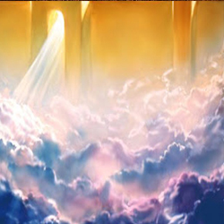
{kind=link}
About:
As its name suggests, Heaven is the realm where the gods reside, and the destination for the souls of those who have died as morally righteous beings. Nothing is known about this mysterious realm, except that it is one of the two realms that is infinite in space, the other one being its popular opposite, the Netherrealm. It is an amalgamation of the East Asian and Christian concepts of Heaven. The realm can be accessed via soulnado. Scorpion's Mortal Kombat: Deadly Alliance ending says he was ripped apart by the purity of that realm, indicating that impure beings may be obliterated upon entering.
Native species
Though questionable as it may be, the Gods are considered to originate from the Heavens. The Elder Gods' place of origin appears to be the universe itself, however.
Notable residents
Raiden: God of Thunder, and a former Elder God.
Fujin: God of Wind.
Earth God: Elemental God of Earth.
Water God: Elemental God of Water.
Fire God: Elemental God of Fire.
Shinnok: A fallen Elder God (former).
Relationships with other realms
Obviously, the Heaven's biggest threat comes from the Netherrealm, its polar opposite. While it doesn't get mentioned much in the games, there are hints that it seems to be in neutral relationship with other Realms. As it is considered paradise by the denizens of Earthrealm, its citizens look upon it with favor.
Back to top
Hinpar:
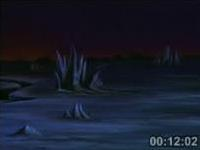
{kind=link}
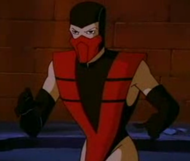
{kind=link}
About:
Hinpar is a realm mentioned in the animated television series Mortal Kombat: Defenders of the Realm.
It is the home realm of the character named Ruby. It is stated by Raiden to be a realm of endless night. It is also said to have been taken over by Shao Kahn, though it is not entirely established that it is a part of Outworld due to comments made by Kitana and Raiden. It is said that Hinpar is a realm ruled by Shao Kahn, though why he would not merge it into Outworld is never established. Though they say that they are headed into Hinpar, Raiden tells them that he cannot go with them, as his powers will not work in Outworld. However, this can be simply be another plot hole in the non-canon show.
Back to top
Ilkan:
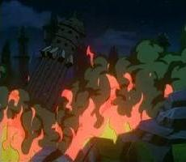
{kind=link}
About:
Ilkan, also known as the Crystal Realm, is a realm mentioned in the cartoon series Mortal Kombat: Defenders of the Realm. And this where the legendary Swords of Ilkan were created.
Hinpar is a realm mentioned in the animated television series Mortal Kombat: Defenders of the Realm.
History
The realm of Ilkan is an ancient world consists of a vast, lush jungle-like wilderness. But most of all, it is also consists entirely of gigantic mountains made of crystals, hence the name the "Crystal Realm". There were once within that realm, a great city whose buildings were built as grand towering castles. There exists within the jungle, a giant sphinx-like monument known as the Temple of Ilkan built to honor the Crystal Realm itself and to house a pair of twin swords with an awesome power to open portals to other worlds. The people of Ilkan built their city and the lived in a time of prosperity, especially as a wealthy civilization because the crystals here are only avialable minerals and valuble substances within the realm's landscape.
But unfortunately, Ilkan came under by attack by Shao Kahn and his forces during a war with a rebellion by the Edenian Princess Kitana and an Amazonian commander named Zara. Most of the realm's native inhabitants were destroyed in the conflict. Ramath, who decleared himself the Keeper of the Crystal Realm, a guardian who protects the Swords of Ilkan, who was killed by Zara. She was consumed by her own greed and lust for power that she desires to possess the swords. Luckily she failed and was banished. But the entire realm of Ilkan after the battle, was forever abandoned and empty.
Return to Ilkan
Centuries later, Zara after years of banishment, lured Kitana and her two Earthrealm comrades Sonya Blade and Jax Briggs into the ruined landscape of her former homeworld already merged with Outworld. Zara used the first Sword of Ilkan and trapped Jax in a spherical energy forcefield. She demands Kitana to retrive her the second sword so that she will release Jax. Kitana and Sonya have no choice but to go and recover the other Sword of Ilkan.
They both arrived in the realm of Ilkan. Sonya finds the this world so empty as it was abandoned for centuries. Kitana told her it has ever since Zara's rebellion. They both then enter the Ilkan. Once inside, they evaded traps and defeated the temple's guardian. a giant emerald monster made of magical energy from Ilkan's very own crystals. They both succeeded in retrieving the second Sword of Ilkan and returned to Outworld. They also succeeded in defeating and banishing Zara to the Void, rescuing Jax Briggs from his imprisonment, and thrown the twin Swords of Ilkan into the Void as well, so that should the Crystal Realm's long-lost treasure never be used for evil purposes.
Back to top
Netherrealm:
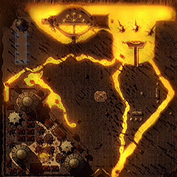
{kind=link}
About:
Shujinko: "This place... it feels dark."
Damashi: "As dark as every heart that inhabits it. Your presence here would not be possible. Only evil resides in this realm." (Deception)
(note: Damashi is an avatar of Onaga the Dragon King, in MK Deception)
Netherrealm appears to be like Outworld, a realm composed of thousands of different layers. In the Mortal Kombat universe, deceased souls or entities who have committed major crimes descend into the Netherrealm to undergo endless torture. In fact, one cannot enter the Netherrealm without being evil or having a soul tainted with evil. Additionally, magic users and magical beings are slowly weakened while in this realm. It is an alternative, more generic name for the Abrahamic concept of Hell, as one of its former rulers was Lucifer (whose name appears only in the Sub-Zero game manual but not in-game). It is also described as "the darkest region of reality", and is inhabited by demons, monsters, and beings of the purest evil.
Though exits from and entrances to the Netherrealm are very limited for obvious reasons, the world had quite a tumultuous history. Millions of years ago, the fallen Elder God Shinnok was banished there. After ages of imprisonment, he was able to break free, deposing Lucifer in the process. He restructured the realm to bear some resemblance to Earthrealm, the world which he had long desired to make his own. He later used it as a staging ground for the invasion of Edenia, but found himself cast into the depths of the realm again after this invasion was foiled. The abandoned war machines of Shinnok were then put to good use by one of his former acolytes, Noob Saibot.
Two locations within this realm include the Bridge of Immortality and the Prison of Souls. These are almost like the Di Yu in Chinese Mythology. The Prison of Souls is the Chamber of Grinding and so is the Slaughterhouse. Shinnok's Spire resembles that of Yan Wang's spire in 'Journey to the West.'
Native realm species
In a generic sense, many demons and spectres are native to the Netherrealm in that human beings can be transformed into them when their essences descend into hell, but it is unclear if Netherrealm hosts any original life. It should also be noted that the inhabitants of this realm look more human than they are, because the realm's magical nature conceals their demonic nature. Once they leave the Netherrealm, they may start to decompose and rot. Like Chaosrealm inhabitants, some Netherrealmers tend to speak backwards.
A specific subset of demons, the Oni, is thought to be native to the Netherrealm. They vary a lot in terms of appearance, stature and color, as is evidenced by Drahmin and Moloch, and appear to be unable to communicate with other lifeforms. (Although in Armageddon's conquest mode Drahmin does state "Welcome to Hell." to Taven.) Their prime state of being appears to be one of unquenchable rage.
There are also seen dismembered humans, presumably from the Chamber of Dismembering.
Back to top
Notable residents
Not born in the Netherrealm:
Drahmin was once a warlord who was presumably assassinated, and transformed into a caricature of his former self by unknown powers, until he became an Oni. He may have been at the seventeenth level of Hell, seeing that he is somewhat eaten by maggots or he might have been skinned in Hell as well.
Reiko was originally introduced as a member of the Brotherhood of Shadow, presumably a demon as well. However, his exact origin is revealed as Outworld in his trading card video.
Noob Saibot is the altered form of the elder Sub-Zero, after he was murdered by Scorpion in retribution for his own killing. The mass corruption in his soul caused him to transform into a humanoid Wraith based on his reincarnation in the next life as he is not in a very low level.
Shinnok became a vengeful specter in the Netherrealm after he was killed by Noob Saibot (as Sub-Zero). Unlike most creatures in the Netherrealm, Scorpion is neither evil nor good and can somewhat withstand the torturous realm better than others stating that he is not at a very low level in Hell. In fact, it has been stated that his powers increase there as of Deadly Alliance. His type of reincarnation is based on the Chinese belief that a dead person with unfinished business comes back to settle scores with opponents and can't be easily put to rest.
Shinnok was once an Elder God, descended into Netherrealm because he wanted to take over Earthrealm without relinquishing his status as Elder God. However, he did overthrow Lucifer with Quan Chi's assistance and became supreme ruler of the dark realm as stated in the MK Mythologies manual but then, his side-story in Armageddon may retcon it otherwise. He is loosely based on the Chinese god of Hell Yan Wang and the Christian Satan, being deceptive and evil.
SmokeSmoke was brought to the Netherrealm by Noob Saibot. It is suspected he has also become tainted with evil after his new master altered his nanotechnology.
Back to top
Native or unknown:
Quan Chi's origin is not known other than the fact that he used to be an Oni, but one of the Netherrealm's demons claims that Quan Chi is a demon from the Netherrealm and was a member of the Brotherhood of Shadows.
Ashrah's origins are unknown. Once an assassin in service of Quan Chi, she found a sword (Datusha) that slowly guided her to the light side.
Moloch is also an Oni, but unlike Drahmin, he is more ape-like than humanoid. The Netherrealm is also home to the Brotherhood of Shadow, led by Noob Saibot and Quan Chi.
Sareena is a demon of the realm, although little is known about her past. She was once a personal assassin of Quan Chi and served the Brotherhood of Shadow, but turned against the clan.
Kia and Jataaka were also demon assassins who served Quan Chi alongside Sareena. While they remained loyal to Quan Chi, Sareena did not.
SmokeSmoke was brought to the Netherrealm by Noob Saibot. It is suspected he has also become tainted with evil after his new master altered his nanotechnology.
Relationships with other Realms
As one could expect, the Netherrealm could be said to pose the biggest threat to the Heavens, being its polar opposite. Most inhabitants of other realms fear the Netherrealm and avoid contact with it if at all possible. Under Shao Kahn's rule in Outworld, however, alliances have been formed between certain of its denizens and those of the Netherrealm (an example being the interaction between Shang Tsung and Quan Chi). Aside from that, it has no other known allies and seems to be viewed as a threat by the citizens of every other realm, being the place of eternal damnation.
Back to top
Nexus:
About:
The Nexus is a fictional plane of existence in the Mortal Kombat video game series that exists as the central hub between the various realms of existence. The concept was first (and only) introduced in the game Mortal Kombat: Deception, as part of the game's Konquest mode.
History
According to the game, the Nexus was created by the Elder Gods to aid their chosen champion in his defense of the realms. The Nexus itself consists of a circular plane bordered by torch pillars that float amongst the clouds in an unknown place. It is rumored that the clouds are meant to suggest that it is located in the Heavens, being it that it was created by the Elder Gods, but such has not been confirmed by Midway Games. Present in the Nexus is an altar to the Elder Gods. Upon it are spaces to place each of the Kamidogu and the Amulet Of Shinnok. The only entrances/exits in the Nexus are a series of six portals, which only open when the appropriate Kamidogu are placed upon the altar. The portal that opens to Earthrealm is available when the Earthrealm Kamidogu is obtained, and when the Earthrealm Kamidogu is placed on the altar, the Netherrealm is revealed. After the Kamidogu from the Netherrealm is obtained and placed on the altar, the Chaosrealm is opened. The Chaosrealm Kamidogu unlocks the Outworld, which in turn will unlock the Orderrealm and Edenia when the appropriate Kamidogu are obtained and placed on the altars. It is said in the game that when all 6 Kamidogu and the Amulet are placed on the altar, the Kamidogu will be transported to the presence of the Elder Gods. Unfortunately, in the video game, once all of the Kamidogu are collected, Onaga appears and steals them, preventing the player from discovering whether or not this is true. Onaga's words suggest that the Kamidogu would not be able to be transported to the Elder Gods unless one had the Amulet of Shinnok, which is not available for collecting during Konquest mode. It is suggested that only the Champion of the Elder Gods would be capable of accessing and utilizing the Nexus for easy transportation between the realms, but this is apparently not the case. As per Deception's storyline, Scorpion is deemed the true champion of the Elder Gods, but Shujinko, Monster, and Onaga all prove capable of entering the Nexus during Konquest mode.
The Nexus in MK: Deception
The Nexus is the central hub of travel in the Konquest mode of Mortal Kombat: Deception. After Shujinko obtains the first Kamidogu, Damashi explains to him how to use it to access the portal in Earthrealm and how to get to the Nexus. Once Shujinko is in the Nexus, he places the Earthrealm Kamidogu on the altar, which unlocks the Netherrealm portal. Shujinko then travels sequentially to the Netherrealm, Chaosrealm, Outworld, Orderrealm, and Edenia, unlocking the portal to each level by obtaining the Kamidogu from the previous realm of existence. Once all of the Kamidogu have been collected, Onaga (the Dragon King) appears and steals them, marking the end of the mandatory portion of the quest. From there, Shujinko is still free to walk the realms to do as he sees fit, usually involving the player returning to realms to collect koins and unlockable items.
Kombat in the Nexus
The Nexus is also used in the game as a kombat arena. This occurs twice during the Konquest mode, and also as many times as the player sees fit after he or she unlocks the arena for the versus mode. It is worth noting that when kombat takes place in the Nexus, the altar and portals mysteriously disappear, also the Nexus apears to be smaller then it does in Konquest mode. The arena also has a surprise Death Trap, not expected by anyone prior to the game's release, that allows a player to knock the opponent through the wall surrounding the arena and into the swirling void beyond, never to be seen again.
Monster
After obtaining the second Kamidogu from the Netherrealm and placing it on the altar in the Nexus, an unknown character approaches Shujinko, claiming to be the true champion of the Elder Gods. Shujinko naturally takes offense, having been informed by Damashi that he is the real champion, and a fight breaks out between the two characters. Monster (revealed by name only through his life bar during Kombat) is really offense-less, but has the exact same moves as Scorpion, the actual true champion of the Elder Gods. After defeating Monster, Shujinko inquires of Damashi as to who he is, and Damashi responds that he doesn't know.
Scorpion
After having obtained the sixth Kamidogu, Shujinko returns to the Nexus in an attempt to place the final Kamidogu on the altar. Scorpion then appears in the Nexus, demanding that Shujinko stop interfering in the affairs of the Elder Gods. Shujinko and Scorpion then engage in Mortal Kombat in the final battle of Deception's Konquest Mode. After he is defeated, Scorpion disappears as well, and no further mention of his appearance is made in light of Shujinko turning his attention to the fact that his quest is finally complete.
Back to top
Nightmare Realm:
About:
The Nightmare Realm is a realm mentioned only in the Mortal Kombat comic book, Battlewave.
The only known resident of the Nightmare Realm is Henge, a fighter who was defeated by Liu Kang.
Back to top
One Realm:
"I used this ultimate weapon to warp reality, merging the realms into a singular existence....the Elder Gods were helpless and I used their own power against them, in the Void beyond the One Realm." (Onaga, in his secret ending for Mortal Kombat: Deception)
About:
The One Realm is a name given to the outcome of merging all the realms into one existence. The only known means of creating the One Realm is with the power of the One Kamidogu. It is not clearly known whether or not the "minor" realms (realms that are not Earthrealm, Netherrealm, Chaosrealm, Outworld, Orderrealm, or Edenia such as Nightmare Realm, Zaterra, Vaeternus, etc.) can also be merged into the One Realm, or even if the "minor" realms have their own Kamidogu to start with, although in Onaga's secret ending in Mortal Kombat: Deception, he explains his battle with the Elder Gods in the Void "beyond the One Realm", which can be inferred to mean that everything (including the Heavens) were also merged into the One Realm, except Onaga and the Void and at the time, the Elder Gods. Whether the One Realm can be accessed to in the Nexus is also unknown. It is possible that the realms' original appearance can be distorted or changed completely during such a fusion. The One Realm can be fused with other dimensions and/or beings, as was the case in the secret ending of Onaga. Ironically, Onaga used the Kamidogu to do the exact thing the Elder Gods feared in the end - the realms becoming whole and the One Being coming back. The only known case of the creation of the One Realm was in Onaga's secret ending in Deception. Towards the end of the opening scene of Deception, Shujinko narrates "Now Onaga has what he needs to shape the realms as he sees fit" referring to his plans of creating a realm in his image. However, this is non-canon to the Mortal Kombat plot. After Shujinko destroyed the six Kamidogu in his quest, he made it impossible for such a thing to ever happen.
Back to top
Orderrealm:
(The Orderrealm, also known as the Realm of Order or Seido, is a realm in the Mortal Kombat universe.)
About:
As the polar opposite of Chaosrealm, Seido is a place where law, order and structure prevail above anything else. It appears to be a clear, advanced, highly urbanized and civilized world. In a geographical standpoint, Seido, the realm of Order appears to be nothing more than a highland made up of many narrow, bridge-like roads that rests upon on an unknown agent. Incredibly long trees appear to grow from the bottom of the roads, liquid water appears from fountains despite having no means of formation, and small streams of water flow into non-existence. This may explain, though not stated, that Seido may also have lowlands, or it may be be due to the realm's magical properties. As a result of its structure, many buildings rest upon narrow walkways, and the inhabitants are well-adapted, as none show any fear of falling. Seido is divided into various towns decided by color, such as Bluetown , Greentown , Redtown and Goldtown . This does not merely apply to the road itself, but also to houses and huts in the area as well. Seido is also home to gemstones, such as the Green Gems , Gold Nuggets , Fire Opals , and Winterstones . Each gem shares the same color of the town they are located and vary in value and rarity. Because of Seido's strict policies, the realm is often at war.
Native Realm Species
Thus far, the only known species inhabiting Orderrealm are Seidans. Seidans are humanoid in form, but like many other species in the realms of Mortal Kombat, possess greater affinities with magic and likely have a longer life expectancy. They are obsessed with structure and organization, which has lead to the fact they seem to care more about abstract things than they do about life and death, which makes them, curiously, a lot like the Chaosrealmers. Despite the egalitarian, clear outlook of their society, Seidans are tense people and many have reservations about their ruling caste, as is demonstrated by Darrius' Seidan Resistance movement. Many inhabitants are also well-adapted to the nature of their realm, as they often appear busy and/or rushing to their destinations. Despite the strict laws, some everyday citizens (excluding the Resistance) still commit serious crimes such as murder, though they never get away with their crimes.
Government
According to the Seidan Guardsmen, freedom is disallowed because 'freedom leads to anarchy, anarchy leads to Chaos, Chaos leads to suffering.' As a result, Seido has innovated strict laws, making the realm safe, but difficult to reside. Though many Seidans feel safe in the realm of Seido, some believe the laws are too harsh, as Seido's citizens can face years of imprisonment for breaking a mere curfew, an offense considered minor by citizens of other realms, and even by some Seidan citizens. It is unknown whether or not Seido has a true ruler. In Darrius' ending in Mortal Kombat: Deception, Shujinko mentions that a Seidan senate existed. This implies that Seido is a democratic realm, though nothing else is known about the Seidan government except for the Seidan Guard. The Seidan Guard is a group of warriors led by Hotaru enforcing the law by any means necessary, with their greatest enemy being the armed Resistance, an amalgamation of revolutionaries who are dissatisfied with the realm's strict policies, led by Darrius. The Resistance, with crude tactics, influences other oppressed Orderrealm inhabitants to join their cause to oppose the Seidan Guard. Despite being a safe realm, Seido is marked by a constant strife between the Seidan Guard and the armed Resistance, therefore resulting in many riots initiated by the Resistance. Both sides are equally ruthless and manipulative in their conflicts.
Notable Residents
Native
Relationships with other Realms
As long as the government can enforce order in a realm, the people of Seido will consider any realm an ally. Most other realms share an uncertain or uneasy relationship with the realm such as Edenia because of how suppressive the law enforcers of its realm can be towards maintaining order. Seido is allied with Outworld because the Seidan Guardsmen, more specifically leader Hotaru, ruled the walled city of Lei Chen to maintain outposts of law and order and to provide protection. Seido's biggest threat is received from its polar opposite, the Chaosrealm because of its primitive nature. They are at war with Chaosrealm for wanting to control their water, resulting in Chaosrealmers enacting riots. With other realms however, it fears no real threats, remaining a truly neutral realm.
Back to top
Outworld:
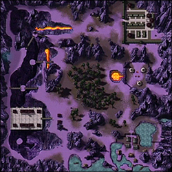
{kind=link}
About:
Outworld's known history goes back millions of years and points at Onaga the Dragon King, as its first ruler. Though he would eventually be supplanted by Shao Kahn, they both shared the same visions of expanding Outworld by taking other realms by force. Unwittingly, both were being controlled by the echoes of the One Being. Outworld is an empire that stretches out over numerous realms which have been magically annexed. Despite the despotism both emperors have displayed, Outworld is in a constant state of turmoil, more so under Shao Kahn than it was under Onaga. Outworld is a large realm of varying landscapes. Outworld's primary landscapes appear to consist of barren, purple wastelands, deserts, pools of acid, dense forests with animated faces, and high, mysterious mountain peaks. Small villages are scattered throughout the landscape, and like Edenia, the realm teems with magic. Beyond the imperial palace, the great temple of the Dragon King and the city of Lei Chen, no real metropolises have been seen in the series. Outworld also houses a brewery, specializing in creating 'Outworld Wine,' popularly drank by master Bo' Rai Cho. It's often rumored amongst many Outworld inhabitants that Earthrealm's rice wine 'puts Outworld Wine to shame'. Commuters also ride the Dragonfly, said to be the fastest form of transportation across the vast expanses of Outworld, aside from sorcery and actual dragons. There are many of these flying transports, each with its own set of destinations.
Native realm species
Due to Outworld's composite structure, not all races found on Outworld are truly native to it, but some have been there for so long they have virtually become natives.
Originally native
Cryomancers. Though now nearly extinct, they used to be a race that lived in Outworld long ago. They resemble very pale humans and have a natural affinity with ice. A few scattered descendants of this race live on Earthrealm (such as the ninjas Sub-Zero and Frost). It is unclear why their race died out.
Outworlders. Like most inhabitants of the realms of Mortal Kombat, Outworlders look like humans, but they seem to have a greater talent for magic and longer life expectancy. All Outworlders seen so far resemble East Asian people of Earthrealm. Though they dislike their rulers, each of them have their own schemes to attain more power and influence. There are only four known Outworlders, they are Li Mei, Bo' Rai Cho, Reiko, and Shao Kahn (though some ambiguously canon information would identify him as a god instead).
Originally non-native or of uncertain origin
Shokan, described as "half-human, half-dragon," are a four-armed humanoid race possessed of towering stature and powerful builds. They are organized in terms of a clan-based monarchy. They are fierce warriors and hate the Centaurians. Goro, Sheeva, and Kintaro are all Shokan that appear within the series. The hostility between the Shokan and the Centaurs is exemplified in Motaro's Armageddon ending, where the Shokan place a curse on the entire Centaurian race, removing their hind legs and turning them into minotaurs.
Centaurians (AKA Centaurs). Though largely resembling the mythical Earthrealm creatures of the same name, this race is far more vicious, possessing scorpion-like tails and horns. They are renowned hunters and powerful warriors. Centaurians have been violently feuding with the Shokan for ages, and the two races compete for the favor of Shao Kahn. Although the emperor seems to encourage this animosity to an extent, forcing Centaurians and Shokan to fight each other for the right to enter his service, he does not allow it to escalate into open warfare that could threaten the already tenuous stability of his realm.
Vampires have been a part of Outworld since their realm was annexed by Shao Kahn. They possess the ability to travel in between realms and are excellent record-keepers. Contrary to other fictional vampires, they can move by daylight in most realms, but are highly allergic to Earth's sun. The realm Vaeternus, from which the vampires originate, was liberated from Outworld by Nitara in Deadly Alliance.
Zaterrans are a virtually extinct, reptilian race that was once governed by a matriarchy on the realm of Zaterra following their displacement from Earthrealm due to the war between Raiden and Shinnok. Despite their ability to blend into their surroundings and resulting talent as hunters, spies and assassins, they are branded as untrustworthy slaves.
Tarkatans, also known as Mutants or Nomads, are a nomadic, humanoid race feared for their barbarous cruelty and extreme bouts of rage. Tarkatans are a muant crossbreed of Netherrealm demons and Outworlders. They possess retractable metal blades in their forearms, and their mouths are lined with razor-sharp teeth. They are notorious cannibals and exhibit animalistic behavior, with the men observed flying into a murderous rage at the scent of a competing male. Though their demonic ancestors originated from the Netherrealm, the Tarkatans have long resided in the wastelands of Outworld.
Edenians, originally from the realm of Edenia, became inhabitants of Outworld after losing 10 consecutive Mortal Kombat tournaments against Shao Kahn's minions. Biologically similar to other humanoids, Edenians are rumored to be descended from the Gods themselves, explaining their extremely long lifespans, slow aging process and natural affinity with magic. Although many returned to the liberated Edenia following the failed invasion of Earthrealm, some Edenians remained in Outworld, having few if any recollections of their realm and unable to accept the place as home. Liberated Edenia is ruled in a diarchy by Queen Sindel and her daughter Kitana, with loyal native Jade commanding the royal Edenian Knights. Edenian traitors and defectors include Rain, Tanya and Daegon.
Relationships with other realms
Long millenia under the rule of a tyrannical emperor have put Outworld at odds with most other worlds and their inhabitants. The realms which have been merged with it over the years could be loosely called allies, only due to the fact their inhabitants were forced into submission to the emperor's might. Many inhabitants of these conquered realms, in fact, seek to separate their realms from Outworld and regain their freedom. Due to 10,000 years of opression under Shao Kahn following its annexation, Edenia has come to be a tenacious opponent of Outworld following its liberation. There is also little doubt that Earthrealm and Outworld are opposing realms; long did Kahn attempt to rule the realm through Mortal Kombat, and later through direct invasion during the time of MK3.
Citizens of Chaosrealm seem content to have Kahn rule Outworld (due to his aggressive nature) while the inhabitants of Orderrealm oppose his rule and the civil strife it has created. Under the rule of Onaga, the relationships between the two neutral realms were reversed, with the Orderrealm citizens contented with Outworld's rule and Chaosrealm inhabitants seeking the overthrow of the Dragon King. However, neither world can actively be called Outworld' ally in a true sense, because of the respective strict and chaotic natures of each world and their inhabitants.
The Netherrealm could be considered an ally under Kahn's rule as he has forged acquaintances there himself, although it was invaded during the MK3 timeframe.
Back to top
Nightmare Realm:
About:
The Nightmare Realm is a realm mentioned only in the Mortal Kombat comic book, Battlewave.
The only known resident of the Nightmare Realm is Henge, a fighter who was defeated by Liu Kang.
Back to top
Rellim Ohcanep:
About:
Rellim Ohcanep is a realm from Mortal Kombat, referenced in Mortal Kombat 3, Ultimate Mortal Kombat 3, and Mortal Kombat Trilogy, upon winning 100 straight matches in two player mode. This feat brought the victorious player to a black screen claiming that they were entering the realm of Rellim Ohcanep. This would then treat them to a game of Galaga. Rellim Ohcanep is supposedly the realm where this game takes place.
While it has not yet been a canon part of the storyline, it was stated as a realm in-game and thus should be kept in mind when including a list of all Mortal Kombat realms.
Back to top
Vaeternus:
About:
Vaeternus was a realm that was conquered long ago by Shao Kahn and was incorporated within Outworld.
This dimension was home to the vampires and one of their kind, Nitara, sought a mysterious orb within Outworld which would permamently release her dimension from Outworld. She was successful in her goal and freed her homeworld through the aid of the cyborg ninja Cyrax.
Back to top
Void:
About:
The Void is a fictional location or realm in the Mortal Kombat series.
Referenced as a mortal by-pass into the Heavens (the residence of the Elder Gods), the Void represents the "white space" of the universe, despite its actual appearance remaining unknown. Soulnados (passageways for souls of the deceased) are depicted as possible gateways into the Void, achievable through "breaking free" of the aggressive spirits within them and slipping into non-existence.
Back to top
Xaa:
About:
Xaa is a realm mentioned in the Mortal Kombat cartoon series Mortal Kombat: Defenders of the Realm.
This realm consists entirely of a jungle-like wilderness with huge spikey rocks, and an empty Asian-styled, temple-like castle at the center of the realm. Not much is known about this strange other dimension, other than it is one of certain realms including Outworld where Raiden has no dominion and is apparently powerless there, as well.
When Princess Kitana's old friend Rain, arrived in Earthrealm. He and his band of rebels dedicated to her father's memory, bring news the that Shao Kahn and his forces are prepared to lay claim to Xaa and steal a scimitar hidden in a temple within that realm. And with that scimitar that has have been said to defeat many warriors with one strike, Kahn would crush all any enemy and rebellion that stood in his way. Kitana agreed to go with him but Liu Kang among his friends who barely trusts him, was more concerned for Kitana. Raiden appeared and agreed to open the portal to Xaa.
But when they arrive, they were attacked by a siege of scarlet demonic creatures appeared out of a portal but they beaten them and got them on the run. That moment Rain unleashes a smoke pillar and took Kitana with him to the portal. Raiden arrived in Xaa and tells the Earth warriors that they are needed back in Earthrealm, revealing that the scimitar, Shao Kahn's invasion of Xaa and Rain's rebel group were all a lie. Liu Kang and Kurtis Stryker chose to stay behind to rescue Kitana.
When inside the castle in Xaa, both of them were attacked by Motaro and his fellow Centaurs that are guarding Rain and Princess Kitana on behalf of Shao Kahn. Motaro was beaten and the Centaurs were distracted by Stryker while Liu Kang is free to go rescue her. Liu Kang open the secret passageway through a fountain within the castle's antechamber using his chi. He then entered a cavernous chamber where Kitana was to be sacrificed to a green creature with five insectoid heads and four arms with three claw-like fingers. Liu Kang defeated the beast and saved Kitana. They regroup with Stryker and tried to escape Xaa, but they were all stopped by the traitor Rain. Kitana decided to beat Rain by herself. Rain uses a stone spiked club from the armory of his "castle" to attack Kitana, but she easily bested him and won. But the pillars destroyed by Rain during the fight, could no longer support the structure of the castle, leaving the entire building beginning to crumble. Rain escaped and Raiden appeared to rescue Kitana, Liu Kang and Kurtis Stryker and take them back to Earthrealm. The castle in Xaa was completely destroyed.
Back to top
Zaterra:
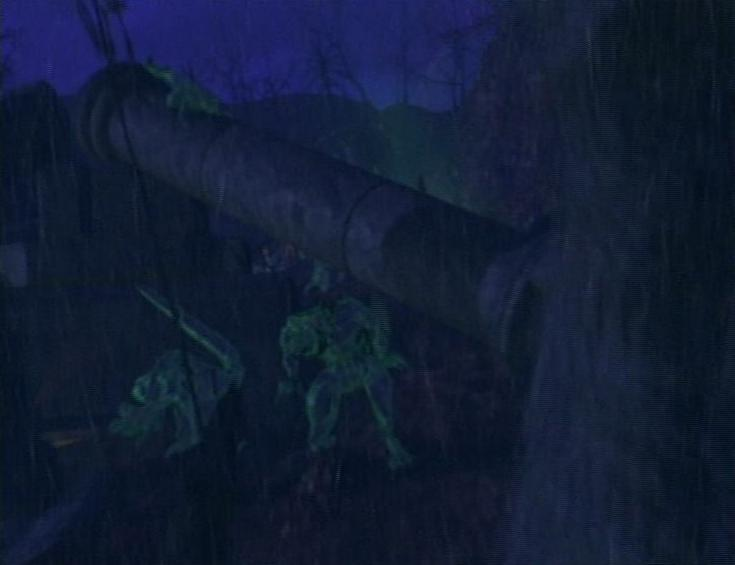 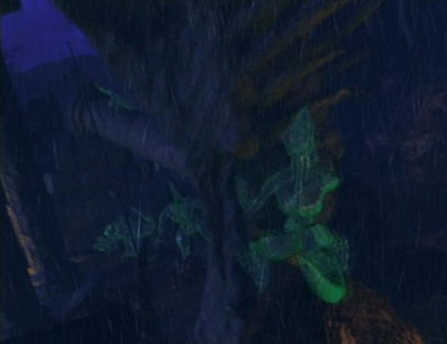
{kind=link}
{kind=link}
About:
Zaterra is a forgotten realm in the Mortal Kombat video game series.
Zaterra was home to Reptile's race of Saurians who originated from Earthrealm long before it was annexed by Outworld through ten consecutive victories in Mortal Kombat. It used to be ruled by a matriarch. Her influence on the other members of the Saurian race is so strong that over time, they begin to revert back to a more primitive consciousness, the longer they are separated from her presence, which also affects their ability to maintain a humanoid appearance. In Mortal Kombat: Conquest, however, a former soldier of Reptile says that Zaterra wasn't destroyed because Shao Kahn came to the realization that the Saurians would make wonderful allies in his plans.
In the television series Mortal Kombat: Conquest, Zaterra is depicted as very rainy; thunder can be heard along with the drenching rain, and many transparent Saurians crawl along the limbs of the trees, broken statues and ancient ruins within that realm.
It is unclear when Zaterra was conquered by Outworld, but Nitara's vampire people kept records of their existence before they were annexed by Outworld as well. The known Saurians also seem to retain no memories of their home world, which suggests that the conquest of Zaterra happened in a distant past. Though the Saurian people inhabited the realm prior to being conquered, their first home was Earthrealm which they were forced to leave during the catastrophic battles between Shinnok and Raiden.
A picture in Mortal Kombat: Deadly Alliance's krypt shows the three forms of Reptile in a very swampy area with a primitive-looking house built out of stone or possibly bone, indicating what the world may look like and that it has a clearly primitive technological level.
In an episode of Mortal Kombat: Defenders of the Realm, an item named "Gem of Tetsurri" is shown. It was revealed that it is not a gem but the crystallized heart of Zaterra's former king, Tetsurri.
Notable residents
Because Zaterra is technically still a part of Outworld, it does not have any notable residents, but Reptile and Khameleon could qualify as Zaterrans since they belong to the Saurian race. It's also speculated that the Vampire race also hails from Zaterra, due to their apparently vast amount of knowledge about the Saurians, although this would pose an issue with Nitara's ending in Mortal Kombat Deadly Alliance, which has been shown to have, at least, partially occurred. It is also speculated that Chameleon hails from here. Kiri and Ankha are also two Saurians whom appeared in the series Mortal Kombat Conquest, while another Saurian named Komodai appeared in the cartoon series Mortal Kombat Defenders of the Realm.
Back to top
Midway page
NetherRealm Official site
Warnerbros Official site